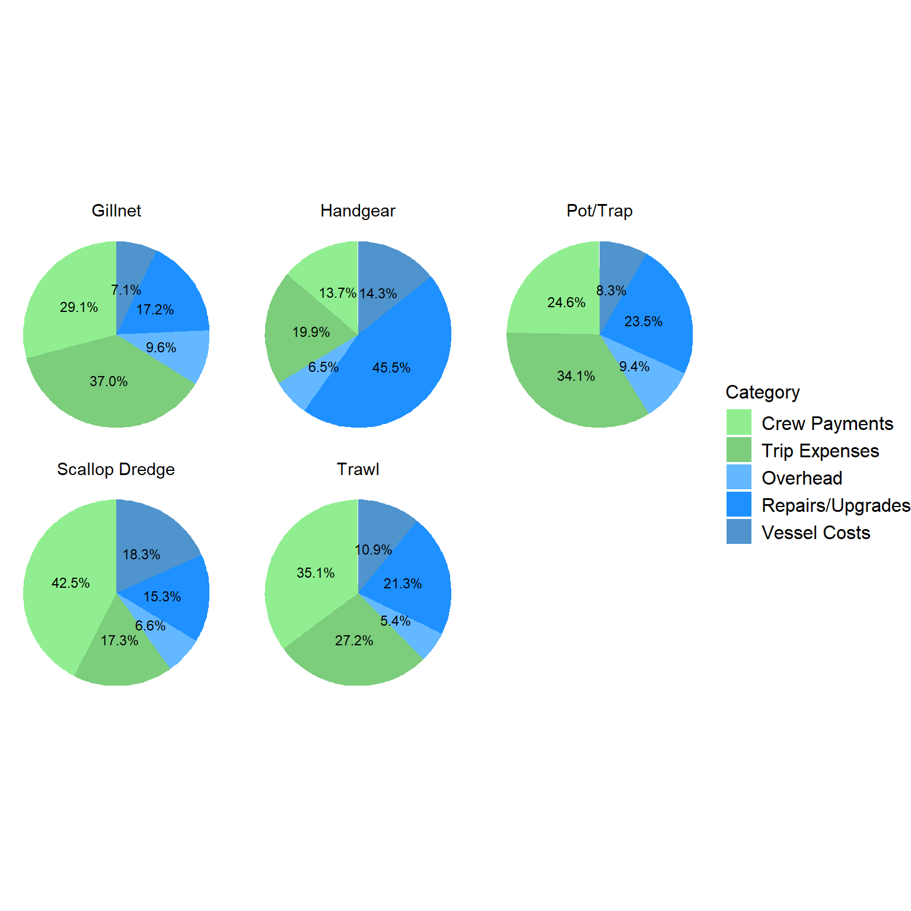
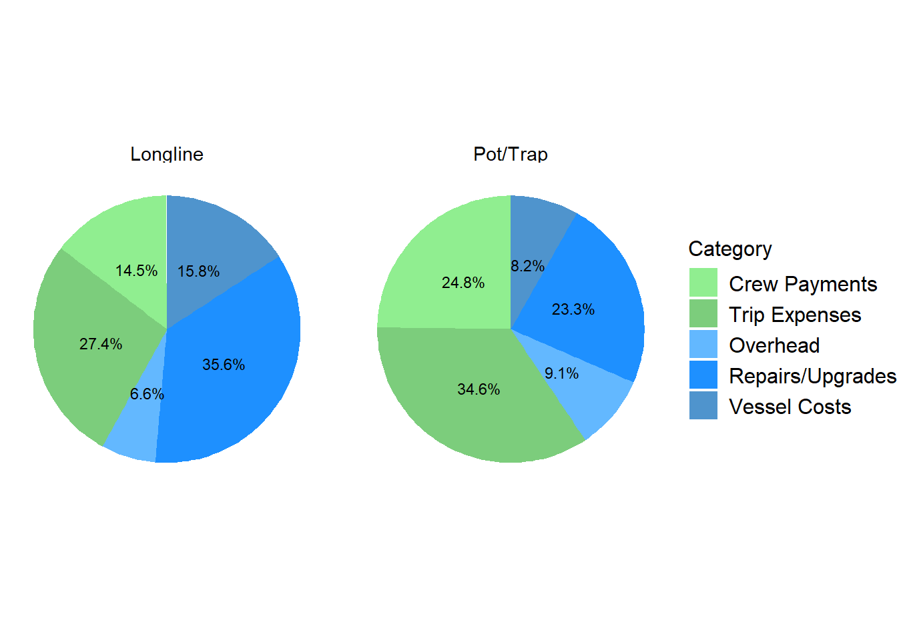
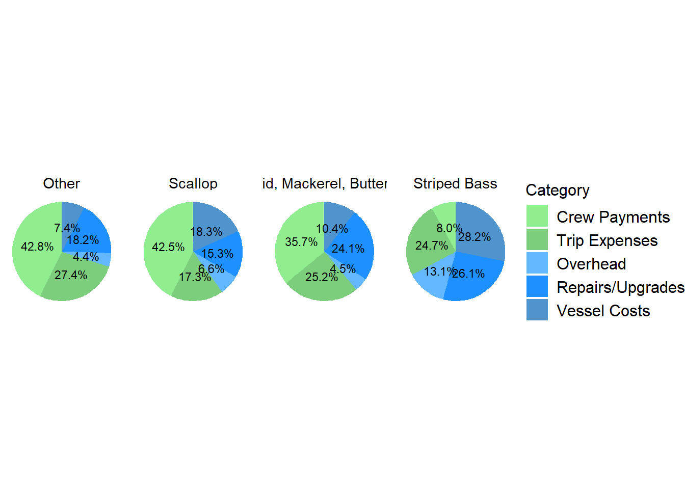

8 Total Profit
| Gear | Response | Sample | Response_Perc | Mean | Median | St.Dev |
|---|---|---|---|---|---|---|
| Dredge_Scallop | 29 | 219 | 13 % | $ 204,187 | $ 112,690 | $ 303,231 |
| Gillnet | 10 | 89 | 11 % | $ -9,034 | $ -8,158 | $ 62,230 |
| Handgear | 59 | 356 | 17 % | $ -46,688 | $ -17,348 | $ 114,780 |
| Longline | 4 | 23 | 17 % | $ -63,785 | $ 37,386 | $ 313,581 |
| Pot/Trap | 160 | 1345 | 12 % | $ -8,083 | $ -438 | $ 126,943 |
| Seine | 3 | 19 | 16 % | $ 498,035 | $ 23,964 | $ 884,362 |
| Trawl | 29 | 188 | 15 % | $ 87,795 | $ -33,071 | $ 349,408 |

| Fishery | Response | Sample | Response_Perc | Mean | Median | St.Dev |
|---|---|---|---|---|---|---|
| Dogfish | 3 | 25 | 12 % | $ -30,697 | $ -9,214 | $ 50,105 |
| Fluke, BSB, Scup | 23 | 136 | 17 % | $ 50,046 | $ 2,894 | $ 181,133 |
| Groundfish | 7 | 52 | 13 % | $ 106,722 | $ 15,279 | $ 292,877 |
| Herring | 4 | 5 | 80 % | $ -56,722 | $ -12,126 | $ 250,426 |
| Highly Migratory Species | 34 | 193 | 18 % | $ -64,630 | $ -23,538 | $ 169,410 |
| Lobster | 152 | 1272 | 12 % | $ -10,324 | $ -2,054 | $ 127,084 |
| Monkfish | 3 | 19 | 16 % | $ -43,989 | $ -49,677 | $ 34,699 |
| Other | 17 | 140 | 12 % | $ 39,074 | $ -35,077 | $ 391,376 |
| Scallop | 28 | 229 | 12 % | $ 216,257 | $ 132,344 | $ 301,619 |
| Squid, Mackerel, Butterfish | 9 | 59 | 15 % | $ 163,117 | $ 168,143 | $ 483,808 |
| Striped Bass | 12 | 66 | 18 % | $ -3,327 | $ -5,822 | $ 22,526 |

| Gear_Fishery | Response | Sample | Response_Perc | Mean | Median | St.Dev |
|---|---|---|---|---|---|---|
| Dredge_Scallop-Scallop | 28 | 216 | 13 % | $ 216,257 | $ 132,344 | $ 301,619 |
| Gillnet-Monkfish | 3 | 19 | 16 % | $ -43,989 | $ -49,677 | $ 34,699 |
| Gillnet-Other | 7 | 70 | 10 % | $ 5,947 | $ -7,102 | $ 67,341 |
| Handgear-Fluke, BSB, Scup | 8 | 56 | 14 % | $ -18,247 | $ -7,792 | $ 41,831 |
| Handgear-Highly Migratory Species | 31 | 181 | 17 % | $ -62,491 | $ -26,077 | $ 147,965 |
| Handgear-Other | 10 | 63 | 16 % | $ -57,406 | $ -28,282 | $ 85,309 |
| Handgear-Striped Bass | 10 | 56 | 18 % | $ -9,733 | $ -8,090 | $ 7,852 |
| Longline-Highly Migratory Species | 3 | 8 | 38 % | $ -86,741 | $ 69,687 | $ 379,917 |
| Pot/Trap-Fluke, BSB, Scup | 6 | 23 | 26 % | $ 42,022 | $ 9,420 | $ 139,232 |
| Pot/Trap-Lobster | 150 | 1265 | 12 % | $ -10,926 | $ -2,054 | $ 127,499 |
| Pot/Trap-Other | 4 | 57 | 7 % | $ 23,376 | $ -9,335 | $ 87,361 |
| Trawl-Fluke, BSB, Scup | 9 | 57 | 16 % | $ 116,099 | $ 32,340 | $ 258,761 |
| Trawl-Groundfish | 5 | 41 | 12 % | $ 151,281 | $ 33,303 | $ 346,093 |
| Trawl-Other | 7 | 38 | 18 % | $ -103,779 | $ -67,164 | $ 184,399 |
| Trawl-Squid, Mackerel, Butterfish | 8 | 52 | 15 % | $ 183,901 | $ 189,215 | $ 512,899 |

By primary gear, scallop dredge has considerably higher median total profit than other gear groups. Pot/trap, seine, and trawl show positive values for mean and median total profit. Gillnet, and handgear show negative mean and median values, while longline shows a positive median and negative mean. For scallop dredge, seine, and trawl gear, mean values greatly exceed median values. For pot/trap mean and median values are nearly identical. In terms of operating profit, mean and median values are relatively close for a number of gear types (longline, pot/trap, scallop dredge). However with total profits, a considerable range is evident in all gear groups. These wide ranges are to be expected as some vessels have extensive repairs and/or upgrades during 2022 while other vessels may have incurred these costs in other years. If a vessel were to show negative total profit in the long run, vessel operations would not be economically viable. Since the cost survey is not conducted on an annual basis, the ability to assess long-term vessel profits is limited.
By FMP, scallop and squid, mackerel, butterfish have the highest mean and median total profits. By median values, the difference between these two fisheries and all other FMPs is considerable. Groundfish has the third highest mean and median values. The lobster fleet, representing over half of the total observations, shows slightly positive mean and median profits. The fluke, black sea bass, scup fishery shows similar limited median profit as the lobster fishery. In terms of operating profit, mean and median values are relatively close for a number of fisheries (herring, lobster, scallop). However with total profits, a considerable range is evident in all fisheries. These wide ranges are to be expected as some vessels have extensive repairs and/or upgrades during 2022 while other vessels may have incurred these costs in other years. If a vessel were to show negative total profit in the long run, vessel operations would not be economically viable. Since the cost survey is not conducted on an annual basis, the ability to assess long-term vessel profits is limited.
When primary gear and FMP are combined, trawl-squid, mackerel, butterfish, trawl-groundfish, and scallop dredge-scallop have the highest mean profits. Median values tell a different story, with trawl-groundfish showing profits more similar to trawl vessels in the summer flounder, black sea bass, scup fishery. Median profits are highest for trawl-squid, mackerel, butterfish, and scallop dredge-scallop. Within primary gear types, a considerable difference in total profit is found across fisheries. For example, within the pot/trap gear group, summer flounder, black sea bass, scup vessels have higher median profits compared to lobster. This is noteworthy as lobster vessels showed higher revenues than summer flounder, black sea bass, scup vessels within the pot/trap gear group. Within the trawl group- squid, mackerel, butterfish vessels show substantially higher median profits compared to groundfish or summer flounder, black sea bass, scup vessels. Wide ranges within Gear/FMP groupings are to be expected as some vessels have extensive repairs and/or upgrades during 2022 while other vessels may have incurred these costs in other years. If a vessel were to show negative total profit in the long run, vessel operations would not be economically viable. Since the cost survey is not conducted on an annual basis, the ability to assess long-term vessel profits is limited.